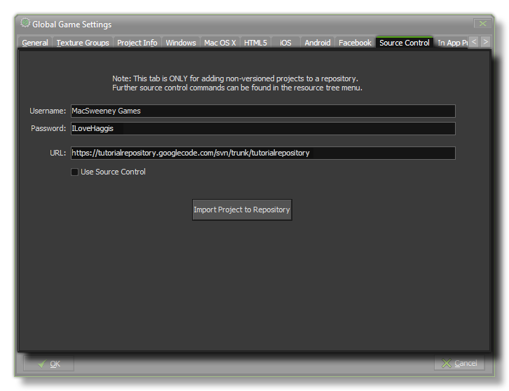

If you have been working on a project without having it configured for source control, it's still not too late and you can actually version it too and have it protected the same as any new file. To do this,
you have to go to the Global Game Settings and select the Source Control tab, then fill in the relevant details :
- Username - This is the username assigned to you by whoever administers the source control system (if you have noone, or don't know, leave it blank).
- Password - This is the password assigned to you by whoever administers the source control system (if you have noone, or don't know, leave it blank).
- URL - This hould point GameMaker:Studio to the location where you created your repository.
Finally, click on the "import Project to repository" button to version your current project and add it to the source control repository. For more information please see the section on
Source Control.
NOTE: This only needs done once for any project and you should never need to do this again.
NOTE: This functionality is limited to the Professional Version of GameMaker:Studio.